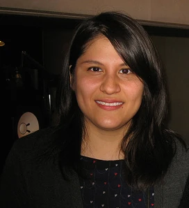

Welcome!
This is a site all about the TV Show Bee and PuppyCat! Bee and PuppyCat is an American adult animated television series created and written by Natasha Allegri. The series revolves around Bee (voiced by Allyn Rachel), an unemployed woman in her early twenties, who encounters a mysterious creature named PuppyCat (voiced by the Vocaloid program Oliver). She adopts this apparent cat-dog hybrid, and together they go on a series of temporary jobs to pay off her monthly rent. These bizarre jobs take the duo across strange worlds out in space. The original series was produced by Frederator Studios with the animation initially outsourced to South Korean studio Dong Woo Animation.
Plot
Bee is a cheerful, eccentric young woman in her early twenties who is habitually fired from menial, low-paying jobs. On her way home from a failed job opportunity, PuppyCat, a strange, mysterious creature, falls from the sky. She takes him in and, when he sees that she is broke and unemployed, PuppyCat teleports himself and Bee to an alternate dimension where they are given a job by TempBot, a gigantic, intelligent television screen. Despite the dangers that this line of temporary jobs would pose, Bee finds that she has a talent for the work and that it pays well enough for her to disregard the dangers.
An ongoing plot element of the series is PuppyCat's past, revealed to be a space outlaw whose love for a space princess ended with him being cursed into his current state by a group of warlocks who constantly attempt to capture him wherever he goes. Other plot elements include Bee being revealed to be a robot, her relationship with the Wizard family and their youngest Deckard, a talented chef with a crush on her who eventually attends cooking school at her behest, and Bee's curiously young landlord Cardamon struggling with his work while caring for his comatose mother Violet. In the second-season finale, the island on which the story takes place is revealed to be Puppycat and Violet's spaceship, which is finally repaired as the group leaves Earth when the Warlocks attack their planet.
Characters
Bee
Bee is a young woman who physically appears to be in her 20s and meets PuppyCat after being fired for sleeping on the job, becoming a temp worker who takes assignments from TempBot along with wardrobe changes for whatever planet she is assigned to.
PuppyCat
The mysterious creature that is Bee's companion and roommate, named for his appearance and being an egocentric jerk. He does not speak and instead communicates with beeping sounds provided by the Vocaloid Oliver
Deckhard Wizard
Bee's friend, neighbor, and former coworker. Deckard works as a prep cook at the cat café from which Bee was fired. He harbors romantic feelings towards Bee. Deckard has a stutter and heterochromia.
Cass Wizard
Deckard's sister and roommate who was a former wrestler and worked at Howell's cat café before becoming a freelance computer programmer seen working in C# and Python. She is the only one of her family who takes note of Bee's inability to age and the strangeness that occurs around their home.
Cardamon
Cardamon is a young boy who is Bee's landlord, business-like and mature for his age. He takes care of his comatose mother Violet, whom he regards as a "princess." He also has a dog named Sticky.
Toast
Toast is the 11th ranked wrestler from Cas' former wrestling team and holds a grudge against Cas' departure, as it leaves her to be the lowest-ranking member on the team. She intrudes into Cas' home life as a result and constantly picks fights with her, marrying Merlin and giving birth to their twin children.
Crispin Wizard
Cas and Deckard's third oldest brother who works in a garage as a mechanic. He has an interest in clowns since he ran away to the circus because his family accidentally forgot his 12th birthday. Crispin and Bee used to be in a relationship and lived together in Bee's apartment until he moved out.
Bird
Bird is Bee's father who is a genius inventor and is currently missing. He was previously in the care of Violet and the Space Outlaw when they were young adults, as a member of Team PuppyCat as part of their candy-collecting job.
Violet
Cardamon's comatose mother who is revealed to be PuppyCat's partner when he was the Space Outlaw, the two being childhood friends.
Creator
Early Life and Influences
Natasha Allegri (born June 18, 1986) is an American animator, writer, storyboard artist, storyboard revisionist, and comic book artist. She is the creator of Cartoon Hangover's and Frederator Studios' Bee and PuppyCat, and is also noted for her work as a storyboard revisionist and character designer for Cartoon Network's Adventure Time, for which she created the characters Fionna and Cake, genderswapped versions of Finn and Jake.
Born in June 1986, Allegri is the daughter of a Native Okinawan mother and a Bolivian father of French, Italian, and Native Bolivian descent. She also watched anime, read manga, and the Garfield comic strip. As a result, she gravitated toward comics rather than cartoons, as she saw it as "less work", although she later acknowledged that it is "just as much work". Allegri grew up in Inverness, Florida. In high school and college, she made comics about her life that she posted to LiveJournal, which is how she met Pendleton Ward.
Career Highlights and Achievements
While in college at the University of Arizona in Tucson, her friend, and creator of Adventure Time, Pendleton Ward, contacted her about working on Adventure Time and she worked on the show for five seasons. To begin working on the show, she moved to California, and dropped out of college over her father's objections. While working on the show, Allegri began drawing gender-swapped web comics of the show's characters, including "Fionna and Cake" as her gender-swapped versions of Finn and Jake. Eventually, after being showcased on Frederator's popular Adventure Time tumblr, these characters were featured in full episodes of Adventure Time—debuting in the episode "Fionna and Cake". Since August 6, 2013, she has also written and illustrated Fionna and Cake comics for BOOM! Studios. Allegri also posted art of "Fionna the Human" and "Cake the Cat" online during the show's earliest seasons, while working as a storyboard artist. It was later developed into a series entitled Adventure Time: Fionna and Cake.
Allegri created and produced her own animated short, Bee and PuppyCat, for Frederator Studios' YouTube channel Cartoon Hangover which was released on July 11, 2013. The episode introduces viewers to Bee, a recently unemployed young woman, and PuppyCat, a small and mysterious creature resembling both a dog and a cat. Bee takes PuppyCat in and, in return, he helps her find strange temp work, in this case babysitting a giant fish named Wallace in Fishbowl Space. In response to the success of the short, Frederator launched a Kickstarter on October 14, 2013, to raise funds for a full season. The Kickstarter was successful, raising Frederator $872,133 toward the production of Bee and PuppyCat, the animated series. This exceeded their original goal of $600,000 and made them the 10th most crowdfunded Video and Film project to date.